Já faz
0dias
0horas
0minutos
0segundos
desde a primeira conversa que, sem a gente saber, começaria tudo isso.
uma pequena parte da nossa história.
desde a primeira conversa que, sem a gente saber, começaria tudo isso.
Entre conversas, risadas, rolês, fotos tortas e momentos que eu queria guardar para sempre…
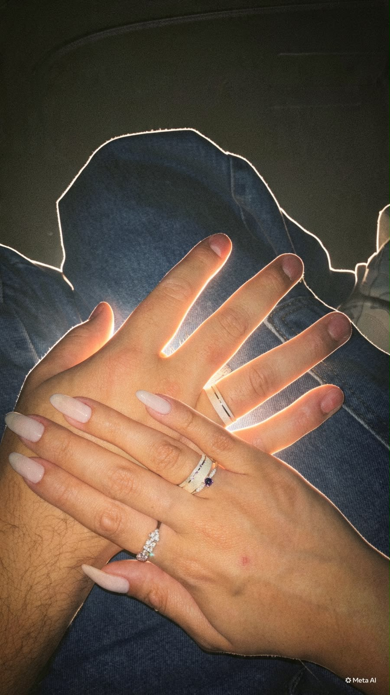
Eu demorei tanto pra conseguir seu número que, se dependesse só de mim, talvez eu ainda estivesse criando coragem. No fim, precisou aparecer um cupido e fazer o trabalho que eu não conseguia fazer sozinho. ♡
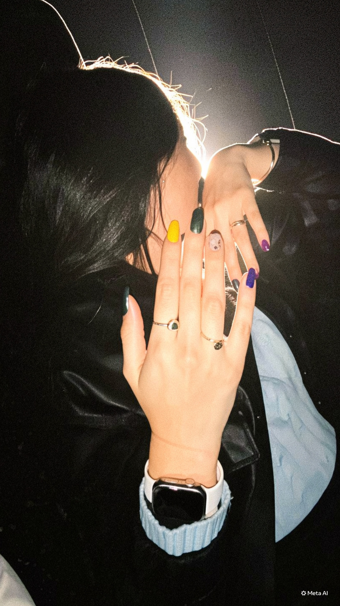
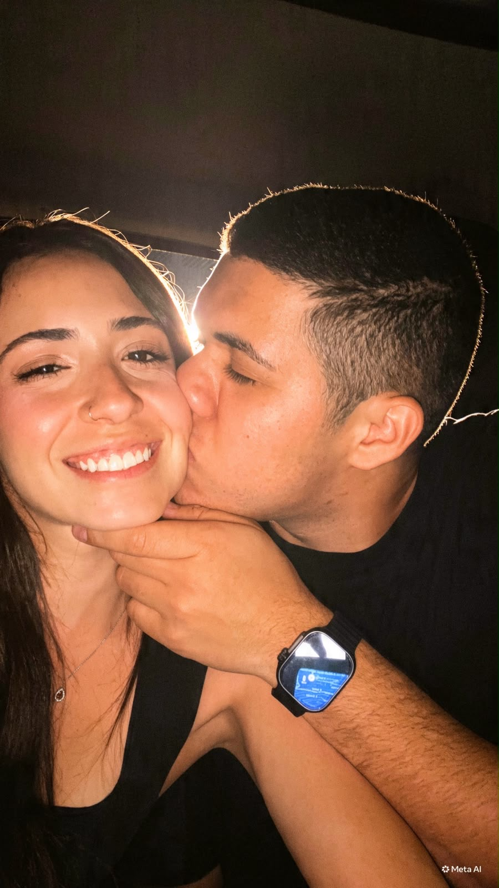
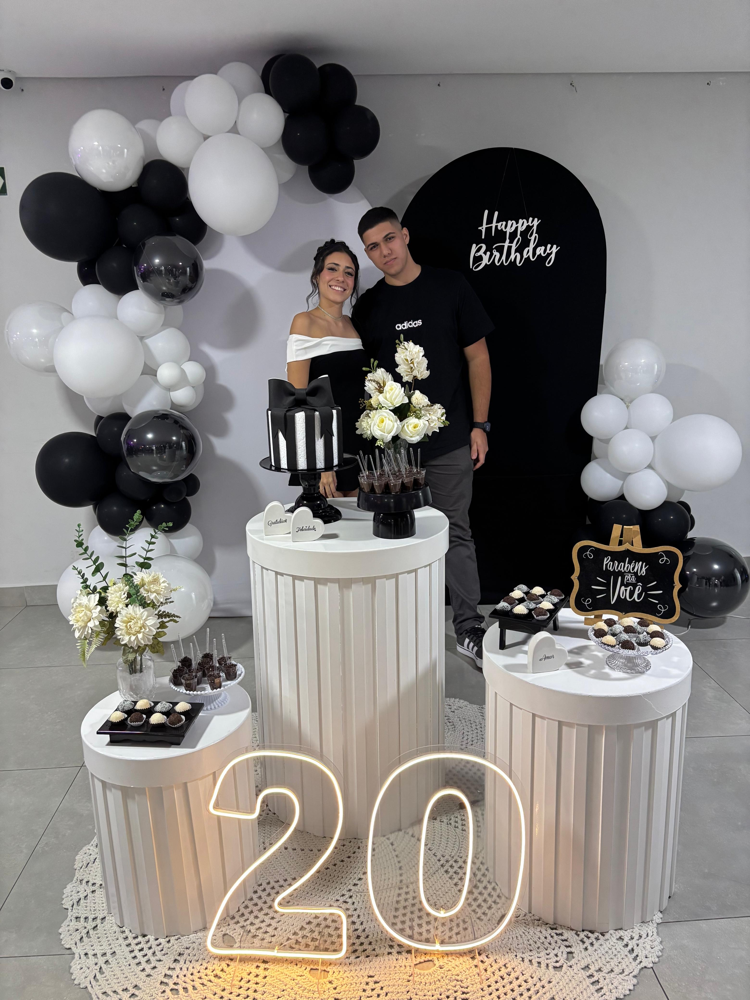
O pior é que eu já estava perdido antes mesmo de conseguir seu número. Eu me apaixonei logo na primeira vez que te vi. Só faltava coragem pra admitir — e principalmente pra falar com você.
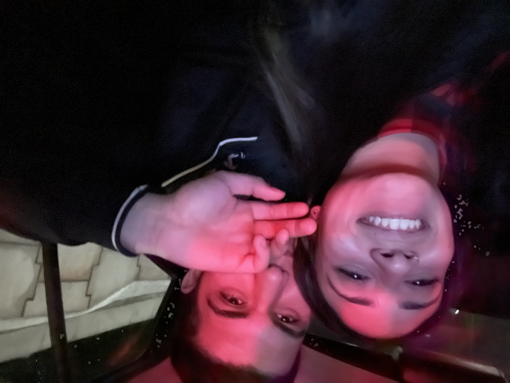
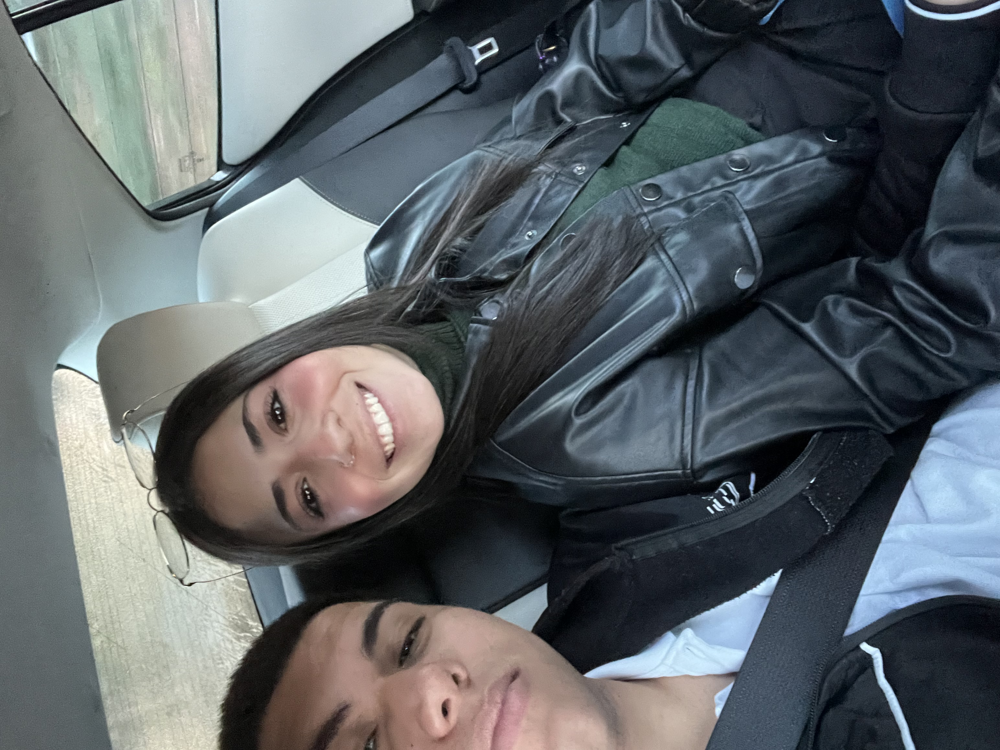
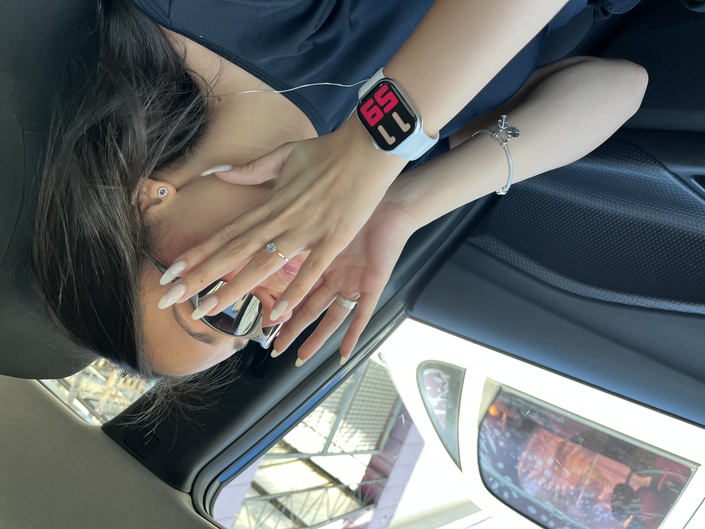
Por fora eu tentava agir normalmente. Por dentro, já tinha pensado em mil coisas, ensaiado mil conversas e provavelmente imaginado nós dois muito antes do que eu deveria. Eu só era tímido demais pra deixar tudo isso tão óbvio.
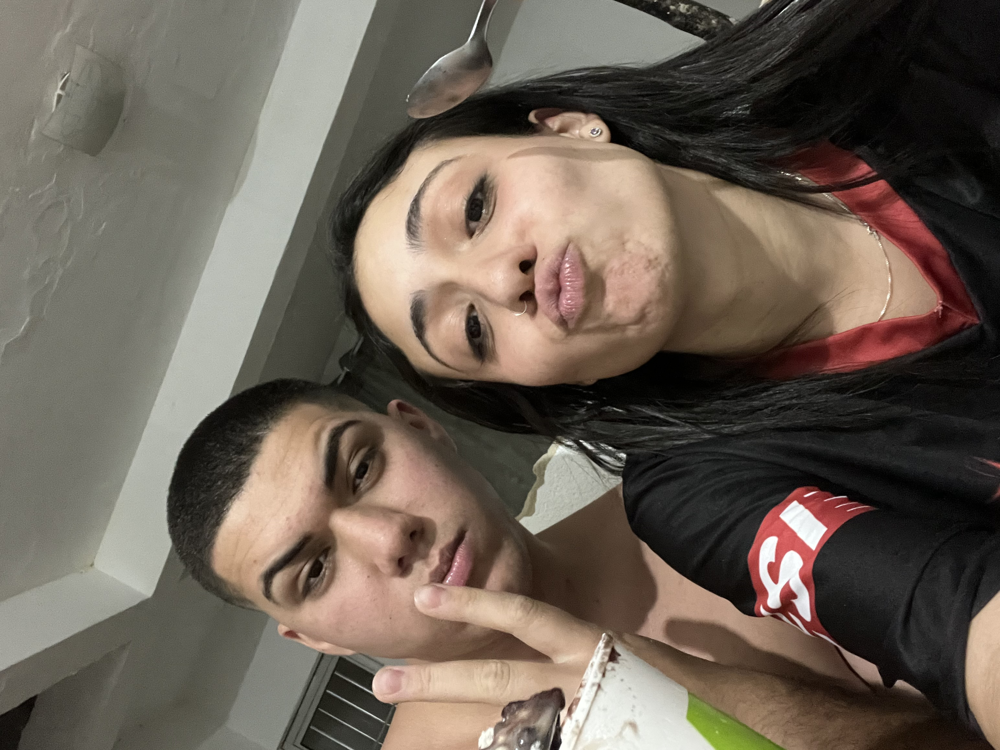
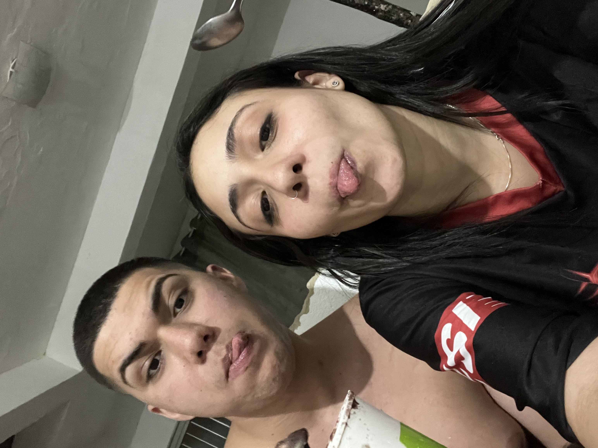
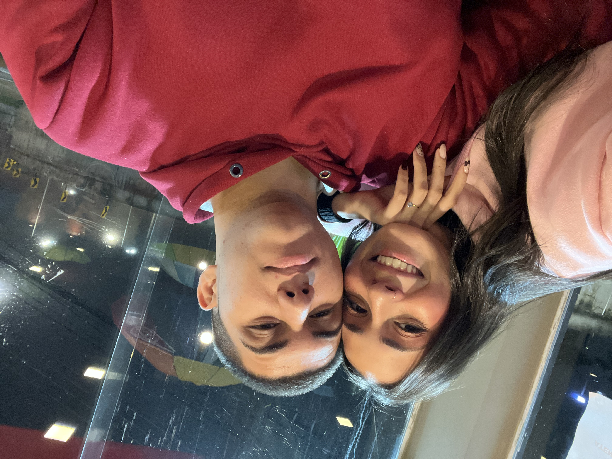
A conversa que eu demorei tanto pra começar virou uma das partes que eu mais gosto dos meus dias. E, aos poucos, vieram as fotos, os momentos, as brincadeiras e um monte de lembrança que eu não quero esquecer.
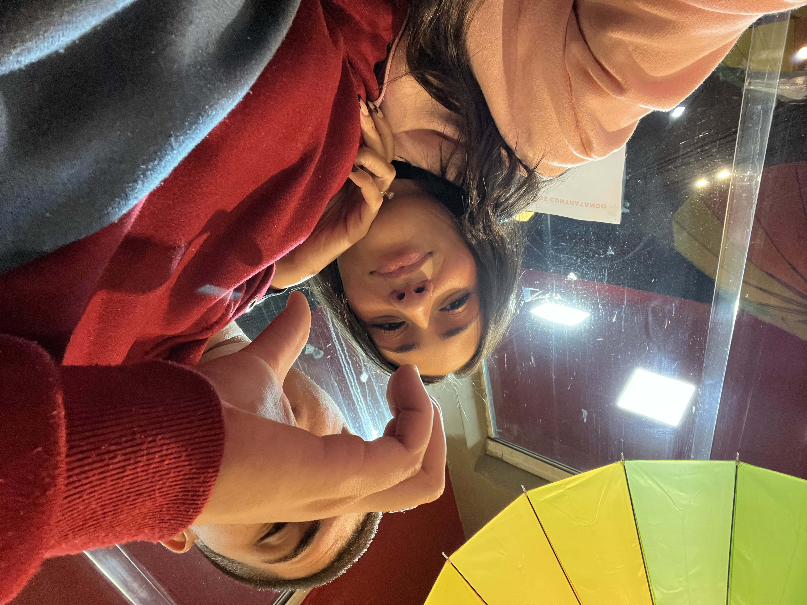
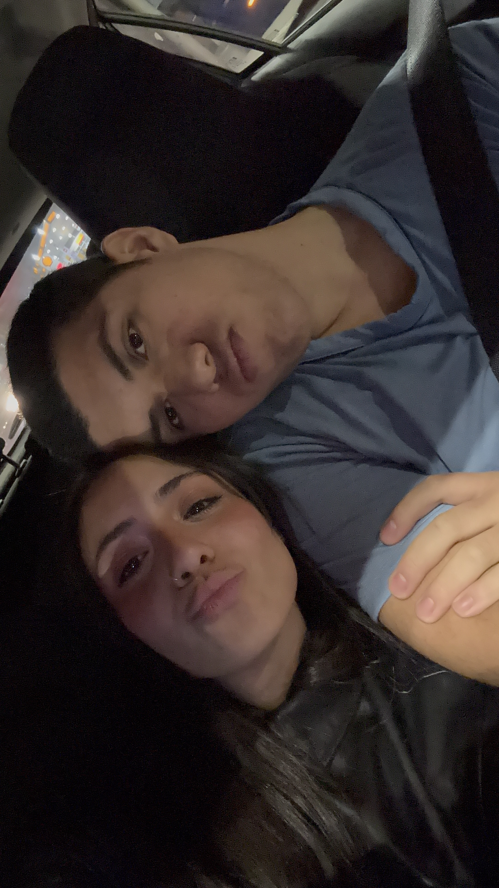
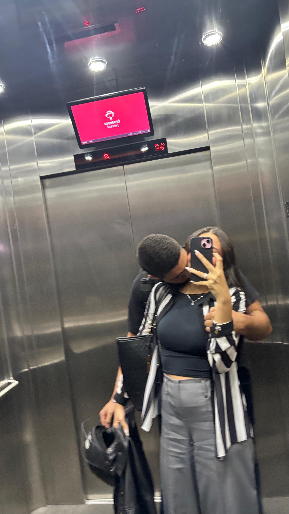
Essas fotos são só quinze pedacinhos do que já aconteceu. Quero continuar enchendo essa página, minha galeria e a nossa história de momentos que façam a gente olhar pra trás e sorrir.
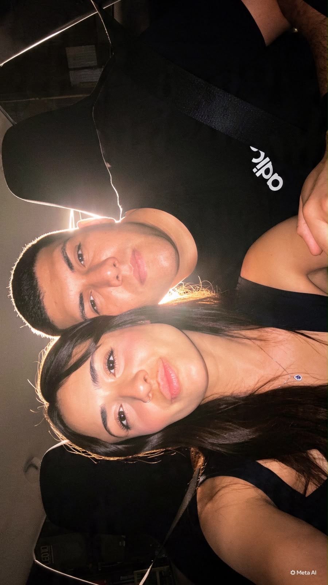
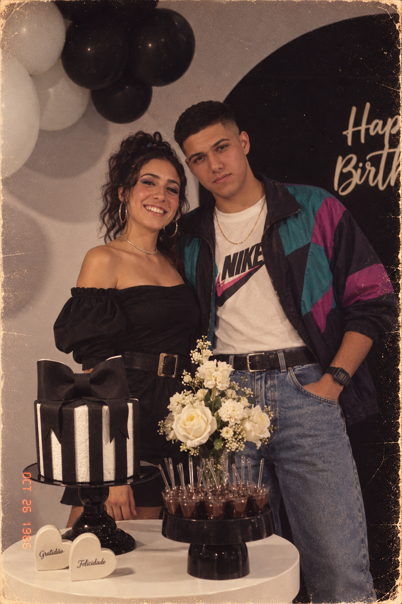
eu poderia ter deixado essas fotos perdidas na galeria do celular. Mas elas são pedaços de uma história que se tornou importante demais para mim.
Talvez eu tenha demorado pra conseguir seu número, mas não demorei nada pra perceber que tinha alguma coisa diferente em você. Eu já estava emocionado bem antes de ter coragem de demonstrar.
Fiz esse cantinho para guardar um pouco do que já vivemos — e deixar espaço para tudo o que ainda vamos viver.
Com amor,
Nicolas ♡
eu escolheria você de novo.